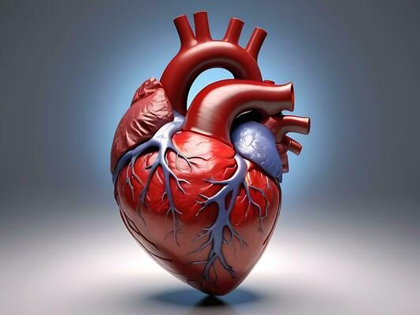

Is reflexology safe for heart disease patients?

Introduction
Reflexology is a popular alternative therapy that involves applying pressure to specific points on the feet, hands, or ears to promote overall well-being. While many people find it relaxing and beneficial, heart disease patients often wonder whether reflexology is safe for them. Given the sensitivity of cardiovascular health, it is essential to understand how reflexology affects heart patients before incorporating it into a wellness routine.
In this article, we will explore reflexology’s benefits, risks, and safety precautions for individuals with heart disease. We will also provide expert insights on how reflexology can be used in conjunction with traditional medical care.
What is Reflexology?
Reflexology is based on the principle that specific points on the feet, hands, and ears correspond to different organs and systems in the body. By stimulating these points, reflexologists believe they can promote relaxation, improve circulation, and enhance overall health.
How Reflexology Works
- Reflexologists apply controlled pressure to reflex points using their fingers and thumbs.
- The stimulation of these points is thought to promote better energy flow and circulation in corresponding organs.
- Reflexology is often used to reduce stress, improve sleep, and relieve pain.
Potential Benefits of Reflexology for Heart Disease Patients
While reflexology is not a cure for heart disease, it may offer several benefits that support heart health.
- Stress Reduction
Chronic stress is a major contributor to heart disease. Reflexology promotes relaxation by reducing stress levels, which can lower blood pressure and decrease the strain on the heart.
- Improved Circulation
Some studies suggest that reflexology can enhance blood circulation, which is crucial for heart disease patients. Better circulation ensures oxygen and nutrients reach the heart and other vital organs more efficiently.
- Lower Blood Pressure
Research indicates that reflexology may help reduce blood pressure levels. Since high blood pressure is a significant risk factor for heart disease, this potential benefit is noteworthy.
- Pain Relief
Patients with heart disease may experience chest pain or discomfort due to poor circulation. Reflexology may help alleviate some of this pain by promoting relaxation and reducing muscle tension.
- Better Sleep
Quality sleep is essential for heart health. Reflexology has been known to improve sleep patterns by promoting deep relaxation and reducing anxiety, both of which are beneficial for heart patients.
Potential Risks and Concerns
Despite its benefits, reflexology may not be suitable for all heart disease patients. Here are some potential risks to consider:
- Possible Blood Pressure Fluctuations
While reflexology can lower blood pressure in some individuals, it may cause temporary fluctuations in others. Patients on blood pressure medication should consult their doctor before trying reflexology.
- Risk of Blood Clots
Heart disease patients, especially those with a history of blood clots, should exercise caution. Reflexology can stimulate circulation, potentially increasing the risk of dislodging a clot.
- Potential Overstimulation
Some patients may experience dizziness, nausea, or an increased heart rate after reflexology sessions. If you have heart disease, it is essential to monitor your body’s response to the treatment.
- Interaction with Medications
Certain heart medications, such as blood thinners, may react negatively to increased circulation caused by reflexology. Always seek medical advice before beginning any new therapy.
Safety Tips for Heart Disease Patients Considering Reflexology
If you have heart disease and are interested in trying reflexology, follow these safety guidelines:
- Consult Your Cardiologist
Before starting reflexology, discuss it with your doctor to ensure it aligns with your heart condition and current treatment plan.
- Choose a Qualified Reflexologist
Look for a certified reflexologist with experience in treating individuals with cardiovascular conditions. A skilled practitioner will be aware of the necessary precautions.
- Start with Gentle Sessions
Request a light-pressure session to see how your body responds. Gradually increase the intensity only if you feel comfortable.
- Monitor Your Symptoms
Keep track of any changes in your blood pressure, heart rate, or overall well-being after reflexology sessions. If you experience dizziness, discomfort, or irregular heartbeats, stop the therapy and consult your doctor.
- Stay Hydrated
Drink plenty of water after each session to help flush out toxins and prevent dehydration, which can affect blood pressure levels.
Scientific Evidence and Expert Opinions
Studies on reflexology’s impact on heart health are still limited, but some research suggests potential benefits:
- A study published in the Journal of Alternative and Complementary Medicine found that reflexology reduced anxiety and improved quality of life in heart disease patients.
- Another study in the Journal of Clinical Nursing reported that reflexology helped lower blood pressure in individuals with hypertension.
While these findings are promising, experts emphasize that reflexology should not replace conventional medical treatments. Instead, it can be used as a complementary therapy under medical supervision.
Conclusion: Is Reflexology Safe for Heart Disease Patients?
Reflexology can be a safe and beneficial therapy for heart disease patients when practiced correctly. It offers relaxation, improved circulation, and potential pain relief, all of which contribute to better heart health. However, certain risks, such as blood pressure fluctuations and interactions with medications, must be considered.